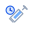
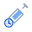
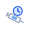
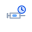
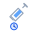
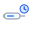
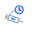

Her er en ny runde, hvor jeg har fjernet de store badges, skjolde, tiles og ydre cirkler omkring hele ikonet. De er derfor mere lette og mindre "logo-agtige". Jeg har stadig beholdt dine krav: blå farve, urskive og sproejte.
Lille urskive og sproejte i samme flow. Mest neutral og ren.

Urskive lagt oven paa barrel-vinduet. Mere kompakt og UI-venlig.
Urskive som en ekstra lille hale til ikonet. Mere karakterfuld.

Urskive overlapper sproejten mere direkte. Mere dynamisk og mere ikonisk.

Meget lav og bred silhuet. God hvis ikonet skal foeles mere som en pen end et badge.

Urskive hænger under sproejten som en lille sekundær markør. Ret sær og let at kende.

Mest klinisk og hverdagsagtig. Foeles som en rigtig insulin-pen med et tids-tegn ved siden af.

Urskiven og en lille tids-arc giver fornemmelse af vedvarende virkning, men uden stor ramme.
